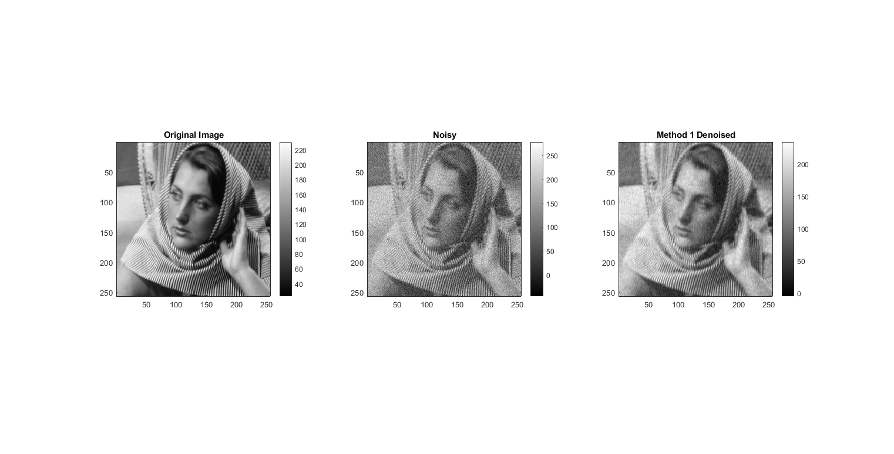
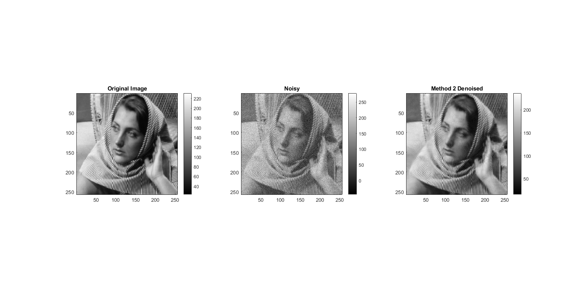
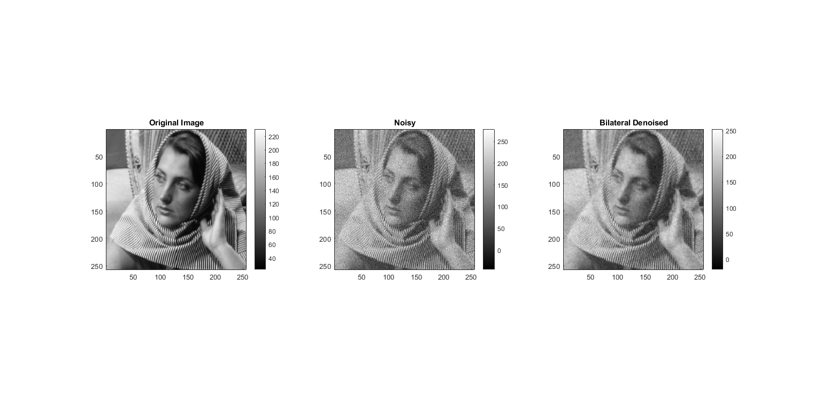
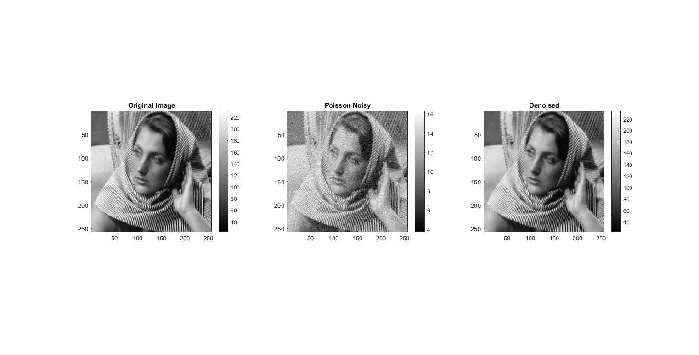
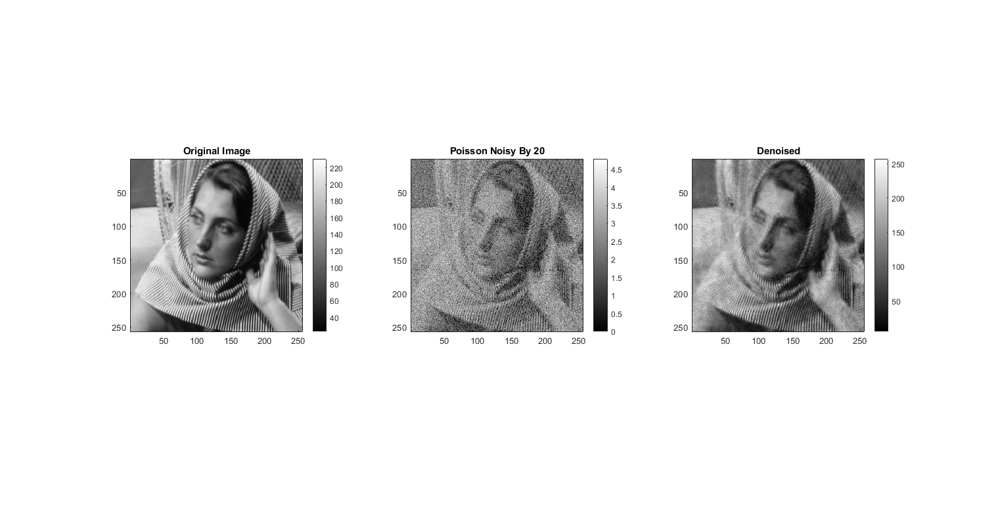

MyMainScript
Contents
- Setting the color scale
- Parameters
- Load image and compute fft
- PCA Denoising method 1
- PCA Denoising method 2
- Bilateral Filtering
- Comparison between Bilateral Filtering and PCA based denoising
- Poisson Noise
- Poisson Noise by 20
- Explanation: Denoising of Poisson Noise
- Helper function to display and save 3 processed images
Setting the color scale
my_num_of_colors = 256; col_scale = [0:1/(my_num_of_colors-1):1]'; my_color_scale = [col_scale,col_scale,col_scale]; to_save = 1;
Parameters
gaussian_sigma = 20; patch_size = 7; neighborhood_size = 31; num_neighbors = 200;
Load image and compute fft
original_pic = double(imread('../data/barbara256.png'));
noisy_pic = original_pic + gaussian_sigma*randn(size(original_pic));
PCA Denoising method 1
tic; modified_pic = myPCADenoising1(noisy_pic,gaussian_sigma,patch_size); fprintf('Method 1 RMSE: %f\n', rmse(modified_pic,original_pic)); savefig3(my_color_scale,original_pic,noisy_pic,modified_pic,'Noisy','Method 1 Denoised','../images/PCADenoised1.png',0,to_save) toc;
Method 1 RMSE: 0.071535
Elapsed time is 3.014152 seconds.
PCA Denoising method 2
tic; modified_pic = myPCADenoising2(noisy_pic,gaussian_sigma,patch_size,neighborhood_size,num_neighbors); fprintf('Method 2 RMSE: %f\n',rmse(modified_pic,original_pic)); savefig3(my_color_scale,original_pic,noisy_pic,modified_pic,'Noisy','Method 2 Denoised','../images/PCADenoised2.png',0,to_save) toc;
Method 2 RMSE: 0.055964
Elapsed time is 149.750013 seconds.
Bilateral Filtering
tic; intensity_limit = [min(min(noisy_pic)),max(max(noisy_pic))]; intensity_range = intensity_limit(2) - intensity_limit(1); spatial_sigma =1.4; intensity_sigma = intensity_range*0.1; modified_pic = myBilateralFiltering(noisy_pic, spatial_sigma, intensity_sigma); fprintf('Bilateral Filtering RMSE: %f\n',rmse(modified_pic,original_pic)); savefig3(my_color_scale,original_pic,noisy_pic,modified_pic,'Noisy','Bilateral Denoised','../images/Bilateral.png',0,to_save) toc;
Bilateral Filtering RMSE: 0.088766
Elapsed time is 2.870522 seconds.
Comparison between Bilateral Filtering and PCA based denoising
As we can see from the RMSE values and the images, the order in which noise is removed well: Windowed PCA (Method 2) > Global PCA (Method 1) > Bilateral Filtering We also see that Global PCA has better contrast than Bilateral Filtering. Windowed PCA performs the best in noise removal Differences between PCA based denoising and Bilateral Filtering 1. PCA method uses the concept of dimensionality reduction whereas bilateral filtering does not 2. PCA is a model based method (in this case, the noise is assumed to follow gaussian model) whereas bilateral filtering does not assume a model 3. PCA is a non local method whereas bilateral filtering uses local spatial information
Poisson Noise
tic; poisson_noise_pic = poissrnd(original_pic); root_noise_pic = sqrt(poisson_noise_pic); modified_pic = myPCADenoising2(root_noise_pic,0.5,patch_size,neighborhood_size,num_neighbors); modified_pic = modified_pic.^2; fprintf('Poisson Noise RMSE: %f\n',rmse(modified_pic,original_pic)); savefig3(my_color_scale,original_pic,root_noise_pic,modified_pic,'Poisson Noisy','Denoised','../images/Poisson.png',0,to_save) toc;
Poisson Noise RMSE: 0.037861
Elapsed time is 152.328519 seconds.
Poisson Noise by 20
tic; poisson_noise_pic = poissrnd(original_pic/20); root_noise_pic = sqrt(poisson_noise_pic); modified_pic = myPCADenoising2(root_noise_pic,0.5,patch_size,neighborhood_size,num_neighbors); modified_pic = 20 * modified_pic.^2; fprintf('Poisson Noise by 20 RMSE: %f\n',rmse(modified_pic,original_pic)); savefig3(my_color_scale,original_pic,root_noise_pic,modified_pic,'Poisson Noisy By 20','Denoised','../images/PoissonBy20.png',0,to_save) toc;
Poisson Noise by 20 RMSE: 0.119899
Elapsed time is 150.439046 seconds.
Explanation: Denoising of Poisson Noise
How does the result of this compare with the earlier case? => The image is not denoised well when the exposure time is low (im/20)
Why? => Since we are dividing by 20, the value of I decreases (i.e. lambda for Poisson noise decreases) and hence the Anscombe transform does not give a good approximation to a Gaussian. As we are using the Windowed PCA method for denoising (assuming additive Gaussian zero mean noise), the method does not perform as well as intended.
Helper function to display and save 3 processed images
function savefig3(my_color_scale,original_pic,mid_pic,modified_pic,mid_name,title_name,file_name,is_color,to_save) if to_save==1 fig = figure('units','normalized','outerposition',[0 0 1 1]); colormap(my_color_scale); else fig = figure; colormap(my_color_scale); end if is_color == 1 colormap jet; else colormap(gray); end subplot(1,3,1), imagesc(original_pic), title('Original Image'), colorbar, daspect([1 1 1]), axis tight; subplot(1,3,2), imagesc(mid_pic), title(mid_name), colorbar, daspect([1 1 1]), axis tight; subplot(1,3,3), imagesc(modified_pic), title(title_name), colorbar, daspect([1 1 1]), axis tight; snapnow; if to_save == 1 saveas(fig,file_name),close(fig); end end